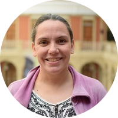

Bloque 1
¿De que se trata este curso?
Este curso es parte de la Diplomatura en AgroAnalytics de la Universidad Autral.
Proponemos trabajar con R de forma ordenada y reproducible. Por ello, presentamos un flujo de trabajo que permite a quienes realicen este curso aplicar buenas prácticas de programación, trabajar de forma colaborativa y presentar su trabajo en un único documento que incluya el análisis y los resultados con la posibilidad de publicarlo en la web.
En cada sección incluimos actividades junto con ejemplos. Queremos que estos ejercicios sean realistas para que cualquiera pueda encontrar similitudes en sus propios datos y pueda aplicar lo aprendido a otras situaciones.
Antes de comenzar
Durante este taller utilizaremos Posit Cloud (una versión de RStudio en al nube). Si quieres trabajar localmente en tu computadora usaremos R y RStudio. Por favor, sigue estas instrucciones para prepararte antes del taller.
Agenda
Este es un cronograma tentativo.
| Duración | Temas |
|---|---|
| 55 minutos | Introduccion, reportes, flujo de trabajo |
| 5 minutos | Pausa |
| 55 minutos | Leyendo y Graficando datos |
| 5 minutos | Pausa |
| 30 minutos | Manipulación de datos |
| 20 minutos | Comunicando tu trabajo |
| 10 minutos | Preguntas y cierre |
¿Quienes somos?
Yanina Bellini Saibene

Yanina Bellini Saibene. rOpenSci Community Manager. Fue investigadora en el Instituto Nacional de Tecnología Agropecuaria (1998-2022) en temas de AgTech. También desarrolla software para apoyar la investigación y la educación. Es profesora de grado y posgrado en varias universidades de Argentina, enseñando Ciencia de Datos aplicada y desarrollando cursos abiertos y tutoriales para enseñar habilidades técnicas en el manejo de datos. Es formadora, instructora y miembro del Directorio de The Carpentries e instructora certificada de Posit. Forma parte del Directorio de RLadies+ Global.
Pao Corrales
Paola Corrales. Doctora en ciencias de la atmósfera de la Universidad de Buenos Aires. Trabajó en ciencias de la atmósfera aplicando técnicas de asimilación de datos para mejorar los pronósticos a corto plazo de eventos severos en Argentina y actualmente trabaja en Monash University explorando extremos en el clima y tiempo en Australia. Es trainer e instructora de The Carpentries e instructora certificada de RStudio. También ha contribuido a proyectos de traducción de materiales de The Carpentries, al libro Teaching Tech Together y R base. Forma parte de Expedición Ciencia, una organización sin ánimo de lucro con sede en Argentina, donde dirige proyectos educativos como campamentos y talleres de ciencia para estudiantes y profesores de ciencias de primaria y secundaria. Es profesora en la Licenciatura en Ciencias de Datos de la Universidad Austral. También desarrolla materiales de licencia abierta para enseñar y aprender R desde cero.
paobcorrales.github.io | @paobcorrales
Elio Campitelli
Elio Campitelli es Doctore en ciencias de la atmósfera de la Universidad de Buenos Aires donde estudió la circulación de gran escala en el hemisferio sur. Actualmente estudia la interacción entre la atmósfera y el hielo marino antártico en la Universidad de Monash. Como parte de su investigación, desarrolló múltiples paquetes de R para trabajar con datos de ciencias del clima, como metR, ggnewscale, icecdr, y otros.
eliocamp.github.io | @eliocamp
Licencia

Todos los materiales de este curso en encuentra bajo la licencia Creative Commons Attribution-ShareAlike 4.0 International License.
Nos inspiramos y nos basamos en los siguientes recursos:
R for Reproducible Scientific Analysis por The Carpentries
R for Excel Users por Dr. Julie Stewart Lowndes and Dr. Allison Horst
R for Data Science por Hadley Wickham
de Excel a R por Paola Corrales y Elio Campitelli
An Antarctic Tour of the Tidyverse por Silvia Canelón
El código fuente de estos materiales y la página web pueden encontrarse en AgroReportesConR.